The kind of AI that we know and talk about today was started over 100 years ago.
In 1955, a small group of researchers wrote a proposal to study how machines might reason, use language, and solve problems normally reserved for people.

Lately, it feels like AI is suddenly appearing everywhere.
You may wonder where this explosion of technology came from.
Ideas about artificial intelligence are in fact older than you think.
Long before computers, cultures around the world imagined artificial beings, mechanical minds, and machines that could speak, write, or serve.
None of these predicted modern AI exactly but together they show that the dream of a machine that thinks, creates, or serves has followed humans across centuries and cultures.
Long before computers, medieval Arab scholars built a device called the Za’irajah: a paper machine designed to generate answers to questions through a system of rotating circles, letter values, and mathematical rules. People could pose a question, and the machine would combine the numerical values of the Arabic letters in your words with astrological categories to produce an answer in the form of a new arrangement of letters. It acted as a rule-based system for producing meaning from patterns.
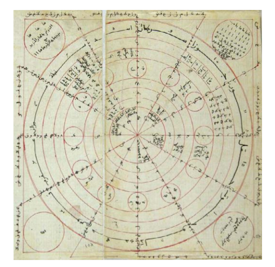
In 16th-century Prague, Rabbi Judah Loew ben Bezalel was said to have shaped a figure from river clay and brought it to life by placing a piece of paper inscribed with a sacred word into its mouth. The golem couldn’t speak or think; it could only follow instructions, serving as a protector for a Jewish community living under threat of persecution. Every Friday before the Sabbath, the rabbi would remove the shem to deactivate it, until one week he forgot, and the golem became uncontrollable. The rabbi eventually stopped it, and legend says its remains still sit in the attic of Prague’s Old New Synagogue, waiting.
In 13th-century Mesopotamia, an engineer named Al-Jazari designed a boat carrying four mechanical musicians (a drummer, two flutists, and a harpist) that could play different rhythms by repositioning pegs on a rotating drum. This machine generated music by following a set of instructions, and changing the song just required changing the pegs. It is one of the earliest programmable machines on record.
In 18th-century Switzerland, watchmaker Pierre Jaquet-Droz and his family built a series of mechanical figures so precise they astonished European courts. One played a real organ, with its chest rising and falling to mimic breathing. Another could write custom messages by dipping a quill in ink with 6,000 moving parts encoding the letters through a system of cams that could be rearranged to change what it wrote. These figures are considered among the earliest ancestors of modern computers.
The kind of AI that we know and talk about today was started over 100 years ago.
In 1955, a small group of researchers wrote a proposal to study how machines might reason, use language, and solve problems normally reserved for people.
JOHNNIAC, the RAND Corporation computer that ran the Logic Theorist: the program many consider the first true AI application, demonstrated at the 1956 Dartmouth conference. Photographed at the Computer History Museum in California.
The first research proposal for AI outlined a plan for what researchers wanted to use AI for.
Source: dartmouth_aifoundations.pdf
“Every aspect of learning or any other feature of intelligence can in principle be so precisely described that a machine can be made to simulate it.”
Do you think every aspect of human creativity can be described precisely enough for a machine to simulate it?
“A large part of human thought consists of manipulating words according to rules of reasoning and rules of conjecture.”
If writing captions or crafting stories is just rules to be replicated, what does that mean for your own creative process?
“The difference between creative thinking and unimaginative competent thinking lies in the injection of some randomness.”
Is creativity just controlled randomness? Is that all it is when AI does it — is that all it is when you do it?
“One ordinarily provides the machine with a set of rules to cover each contingency which may arise… One expects the machine to follow this set of rules slavishly and to exhibit no originality or common sense.”
Does a machine that follows rules “slavishly,” with no originality or common sense, sound like any AI tool you’ve used?
“I propose to study the relation of language to intelligence… The human mind apparently uses language as its means of handling complicated phenomena.”
The people who decided what AI should do didn’t look like most of the people it would affect — what does that leave out?
There were many terms researchers used to describe these ideas. Some of these were already established fields of study.
Artificial Intelligence
Of all the options, the term that gained the most attention was the one that compared machines to human minds.
Do you think that using a different name for this technology would make us treat it any differently?
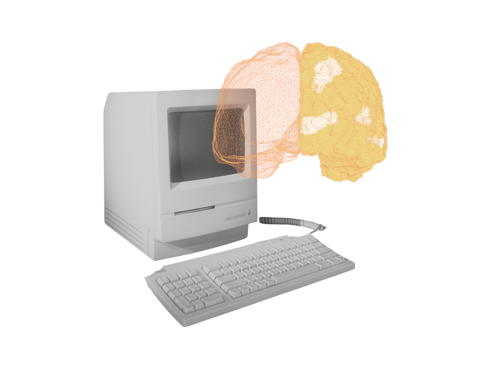
Early AI was designed to follow rules:
IF opponent’s queen is unprotected
AND my rook can reach it in one move
THEN take the queen
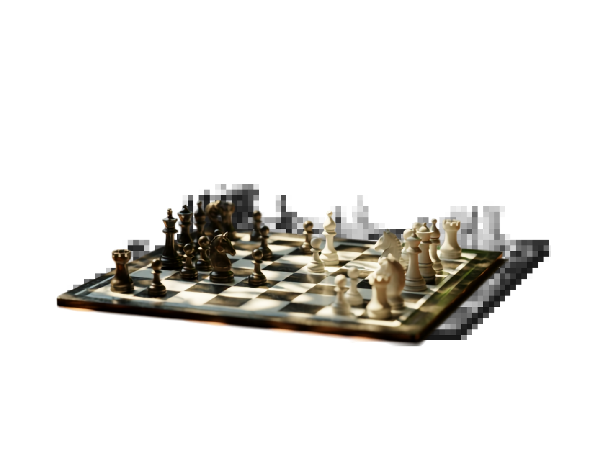
IF user watched a scary movie
AND gave it 5 stars
THEN show more horror movies
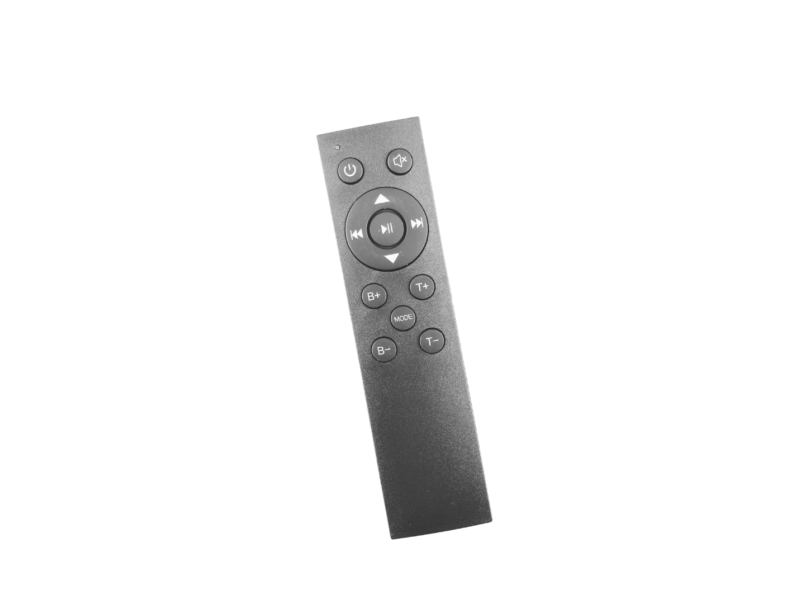
IF oval shape detected
AND two small circles found inside
THEN label area as “face”
Then researchers tried something different.
Without using rules they “fed” the machine millions of examples and let it figure out the patterns instead of following fixed rules. This approach is called machine learning and is still how a lot of AI works today.
This type of machine learning started with datasets.

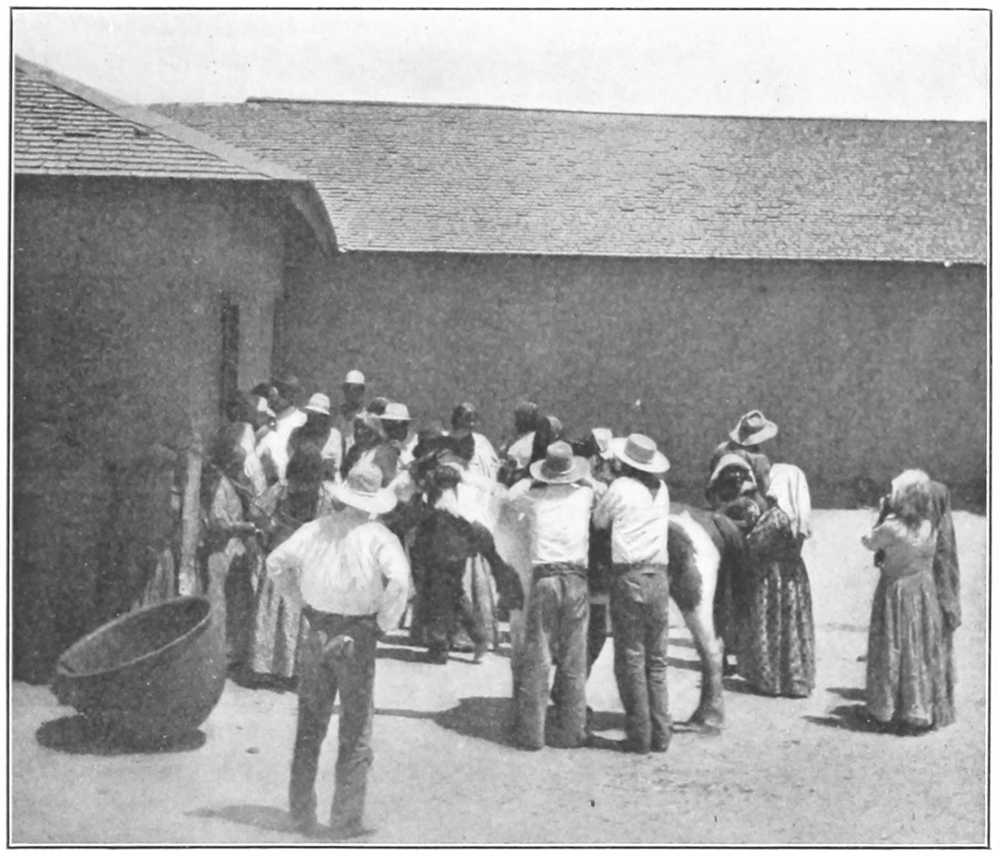
Generative AI
Predictive AI
Some AI uses rules or pattern recognition to sort, predict, or check things.
Examples:
Other AI uses patterns to generate brand-new things, like text, images, and video.
Let’s focus on this generative kind of AI which powers tools like ChatGPT.
To make generative AI, you need a LOT more examples than those data sets.
Examples:
The internet solved that problem.
Every post, comment, photo, and video made by real people became potential training material.
This was important for GPT 3.5: the model that rapidly accelerated ChatGPT’s popularity
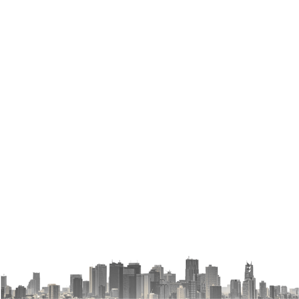
in addition to other things in its giant collection of human-created content.
Most common training sources for GPT2.
Some languages, cultures, and communities are represented more in training data than others.
Common Crawl’s crawling process prioritizes pages on popular websites, which means smaller websites and sites in non-English languages are not as represented.
It takes more than data to train these models.
Behind the scenes, millions of people help prepare data, review outputs, and improve models.
*Insert statistic about how many people are doing this for little pay in other countries.
And as you know, the internet has been filling up with writing and images made by AI, not people.
When AI models increasingly get trained on other AI-generated things instead of real content, their quality can erode.
Researchers call this model collapse.
When this happens, it’s the things that show up less often in training data, like unique styles of phrasing, niche topics, and uncommon perspectives that disappear while the most common information survives.
This further impacts whoever was already underrepresented in the data to begin with.
Currently, some LLM companies are looking at printed material as training data that is safe from AI contamination.
Others are leaning on synthetic data (curated artificial data) to grow and develop their models.
As generative AI companies compete to develop better AI models, it’s becoming less clear where and how exactly they are training their models.
This has been a concern for people who do not want their content to be used as training material.
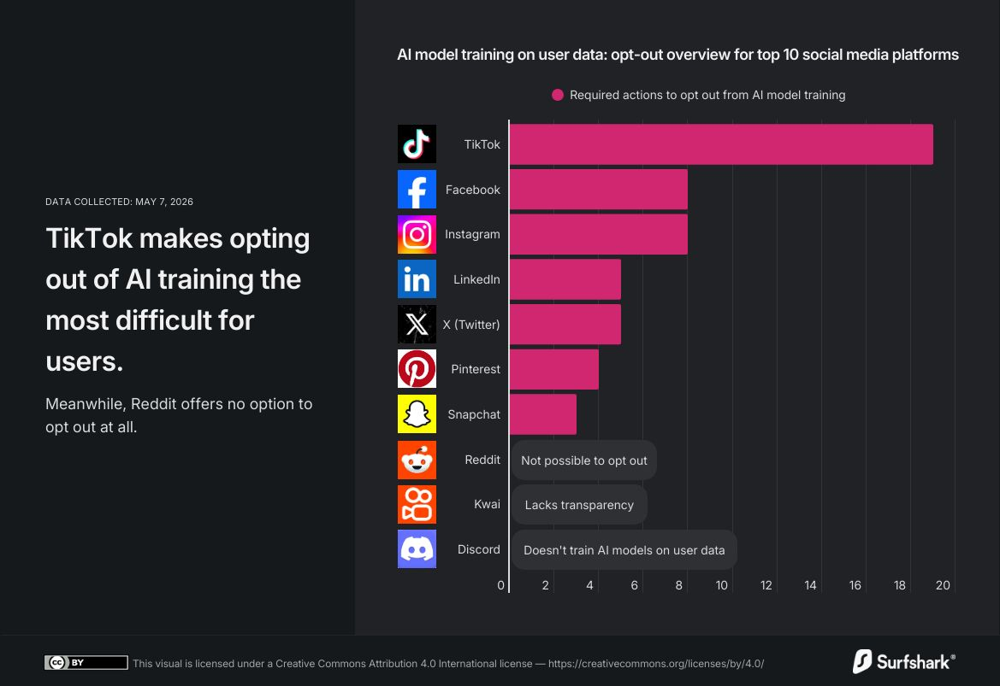
So while some are using AI to create art, others are finding ways to reclaim their art.
There is one more significant piece to generative AI.
Every AI request sent through the internet travels to physical computers. Those computers require electricity, cooling systems, networking equipment, and buildings called data centers.
Servers generate a lot of heat. To keep them from failing, data centers pump water through cooling systems that absorb that heat and release it as steam through cooling towers.
A large data center can consume up to 5 million gallons of water per day, roughly equivalent to the daily water use of a town of 10,000 to 50,000 people.
This water usage most directly impacts locals. In The Dalles, Oregon, Google built its first data center in 2006. By 2024, a third of the entire city's water supply went to Google's three local data center sites.
Beyond cooling, indirect water consumption from the power plants that supply electricity can represent up to 75% of a data center's total water use.
To decrease water usage, some new approaches are being developed. For example, immersion cooling submerges servers in a non-conductive liquid, which gets rid of the need for water-based cooling. These technologies are being worked on and are not yet adopted widely.
When you send a prompt to an non-local AI, it travels through underground fiber optic cables to reach a data center. Inside, thousands of servers process your request simultaneously. This takes electricity, which comes from the local power grid through high-voltage transmission lines.
Data centers can require amounts of power similar to a medium-sized city, and accounted for nearly 4.4% of U.S. annual electricity in 2023, a figure expected to grow dramatically as AI demand increases.
Since that electricity comes from the existing grid, data centers compete with homes, schools, and hospitals for power. Some companies are investing in on-site solar and wind; others purchase renewable energy credits without changing how they actually draw from the grid.
Before a single server is installed, a data center needs approval from local government: land use permits, environmental impact assessments, noise level reviews, and confirmation that the local grid and water systems can handle the load.
Zoning reviews must evaluate whether the local grid and water systems can support such loads, especially in areas with old or limited infrastructure.
Companies often approach local governments with offers that are hard to refuse, like investment in water or road infrastructure, property tax revenue, and promises of jobs.
Google invested almost $29 million into updating The Dalles' water system in exchange for a 92% discount on its property taxes for 15 years. These deals shape what communities get and what they give up.
Building and running a data center requires skilled workers: electricians, HVAC technicians, network engineers, construction crews, and security staff. The construction phase brings a surge of temporary jobs to an area. But once a facility is operational, most of the work is automated.
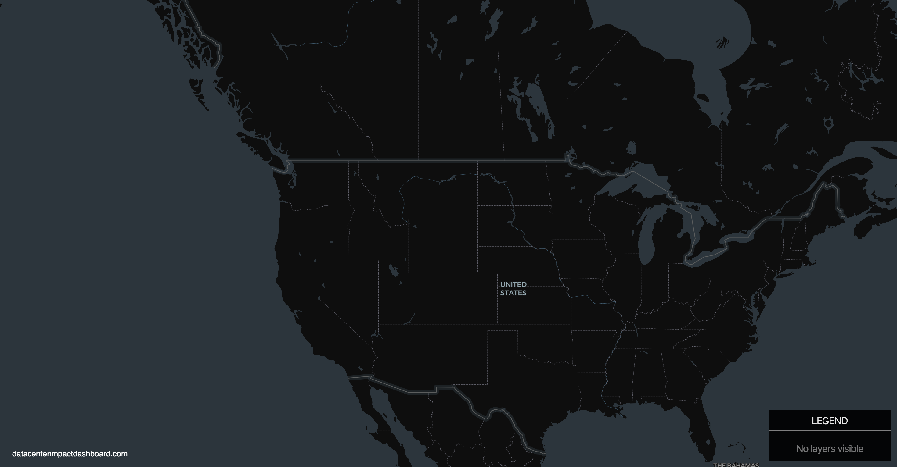
Data centers already existed for decades to run the internet but their growth is exploding now.
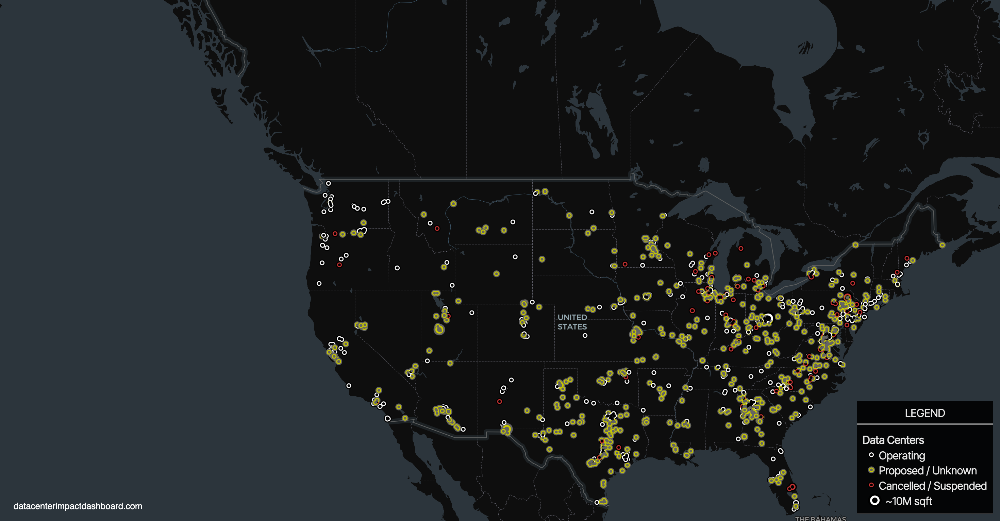
Over 1,500 new data centers are currently in development across the United States, with more expected as AI demand increases.
67% of planned data centers are in rural areas. The South alone accounts for nearly half of all planned construction.
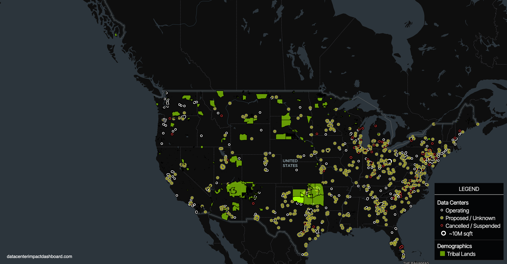
Energy projects on non-tribal lands can face permitting delays of three to ten years, but projects on tribal land often move faster because tribes have sovereign authority to handle their own regulations. This incentivizes data center construction on and near this land.
Responses from Native communities is divided. Some tribal leaders see the boom as economic opportunity in communities, while others worry about the environmental and social impacts.
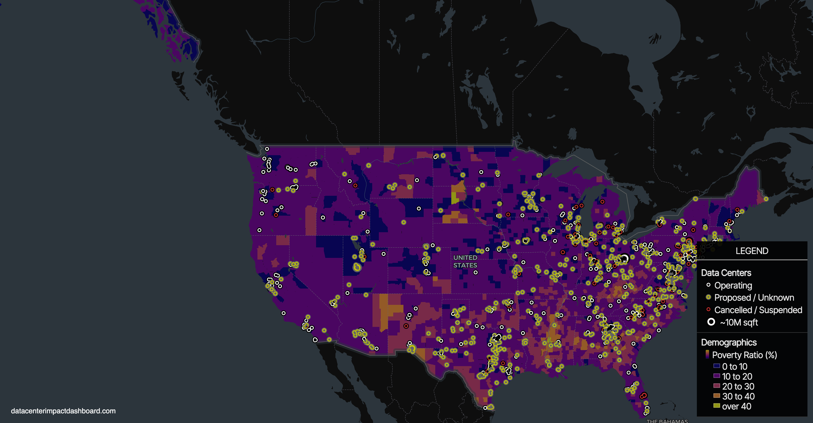
Data centers are disproportionately located in communities that already face unhealthy air quality, groundwater threats, and high concentrations of hazardous waste.
In California alone, nearly one-third of all data centers are in the state's most polluted neighborhoods.
/34.png)
/35.png)
/36.png)
/37.png)
When community well-being isn’t prioritizing, the introduction of a data center can be jarring.
So communities are fighting back.
Since 2025, at least 18 states have passed or introduced laws requiring data centers to pay their own electricity grid costs instead of passing them onto residents. Oregon, Texas, Oklahoma, and South Dakota have all signed this protection into law.
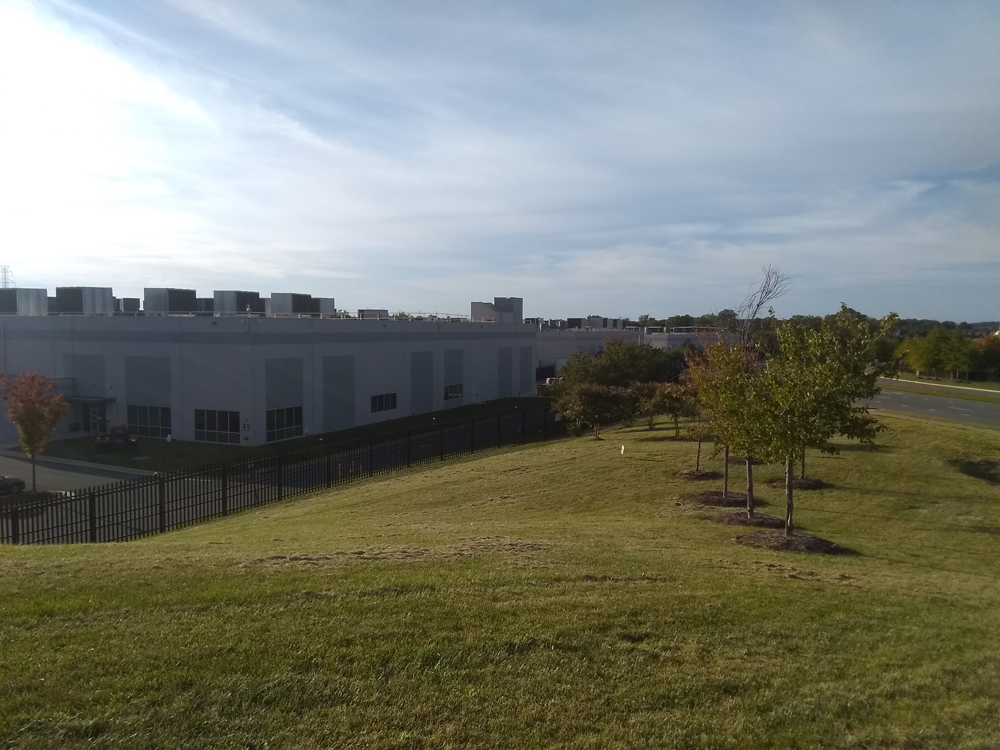
Some communities have halted data center construction entirely. In Warrenton, Virginia, every town council member who voted yes on an Amazon data center subsequently lost re-election. Throughout the country, at least $64 billion of data center projects have been blocked or delayed amid local opposition.

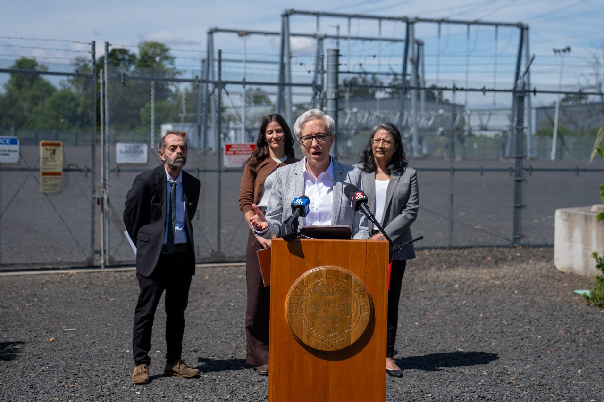
In Lancaster, Pennsylvania, residents negotiated a legally binding agreement called a “community benefit agreement” before a data center could break ground.
This agreement included strict noise limits, 100% renewable energy, a hard cap of 20,000 gallons of water per day (compared to the previous tenant’s 100,000–125,000), and a $20 million contribution to the city’s sustainability and economic development funds.
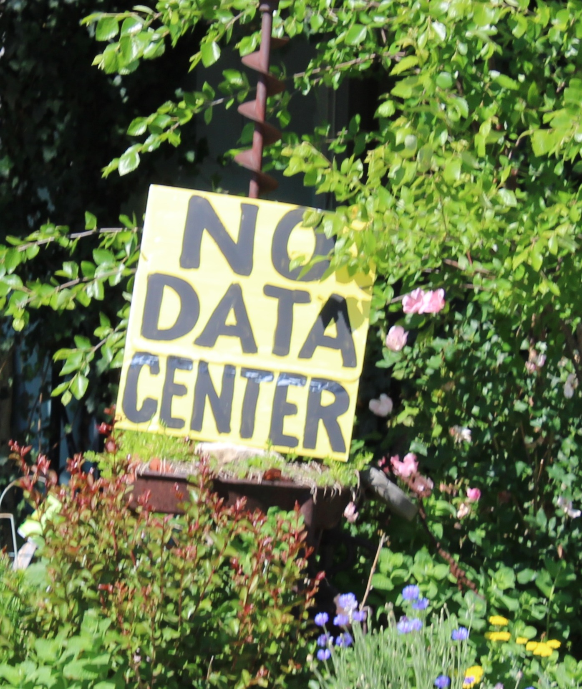
Tribal nations are asserting their own terms. The Seminole Nation voted 24–0 to permanently ban data center construction after a startup tried to bypass community consent.
In Tulsa and Oklahoma City, city officials voted to pause all incoming data center development until 2027.
Remember, generative AI was built from the contributions of a LOT of people.


And now that the technology is here, we have the opportunity to decide what it ought to used for.
Accessibility
Language Translation for Endangered Languages
Generating Audio Descriptions for Visually Impaired People
Generating Music Transcripts for Musicians to Practice With
Video Game NPCs
Deception
Automating Customer Service Jobs
Animating Illustrations
Placeholders for Visuals
Virtual Voice Acting
Deepfakes
Efficiency
Automatic Subtitles
Transcribing Meetings
Creativity
Rapid Prototyping with Storyboards
Color Grading Videos
Making video game NPCs that respond dynamically
Creating Promotional Material
Slop
Writing News Articles
Generating Stock Photography
Political Text Messages
Generating LoFi Background Music
Whether generative AI is here for the better or for the worse, there are many different ideas about how AI will play out
And we need many more people involved to define what it becomes
We asked some media arts students how they felt about AI in creative spaces.
no pressure from society, classrooms, products or other sources to use AI; High agency
High Pressure from society, classrooms, products, or other sources to use ai; Low Agency
not aligned with personal ethics or not good enough to achieve
aligned with personal ethics or good enough to achieve
write an essay
generate an image
design a character
edit an image/film
create a storyboard
do research
brainstorm ideas
ask advice
on a Google search
abstaining from AI
learning how to
regulate AI
These had the highest level of disagreement across the student groups
n = 36, ages ranged from 9-17 across 3 classes
This map is still being filled out by researchers, by companies, by lawmakers, and by people like the students who developed stances on where they didn’t want this technology involved with their creative process.
The future of AI is still up for grabs. It’s important to have a say in how it’s built, used, and questioned — not just what you get handed.
Your voice is important for determining the future of AI.
Thanks for sharing that.
Your response is saved on this device for now.
Responses on this device
Think critically.
Create intentionally.